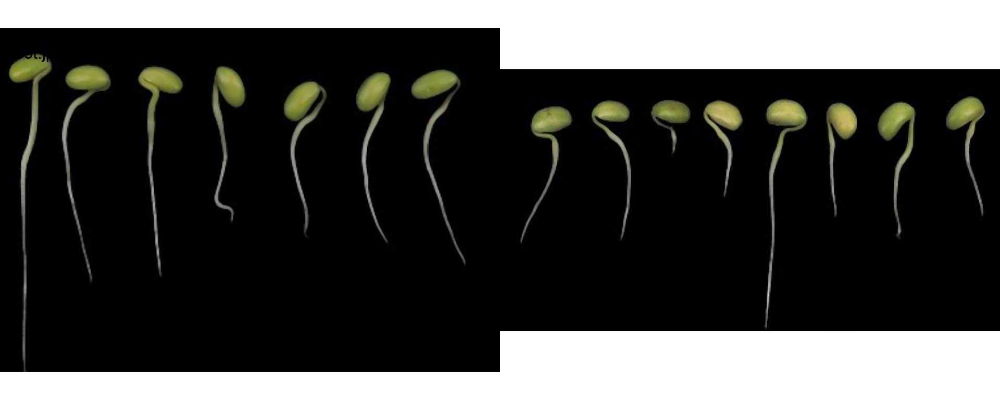
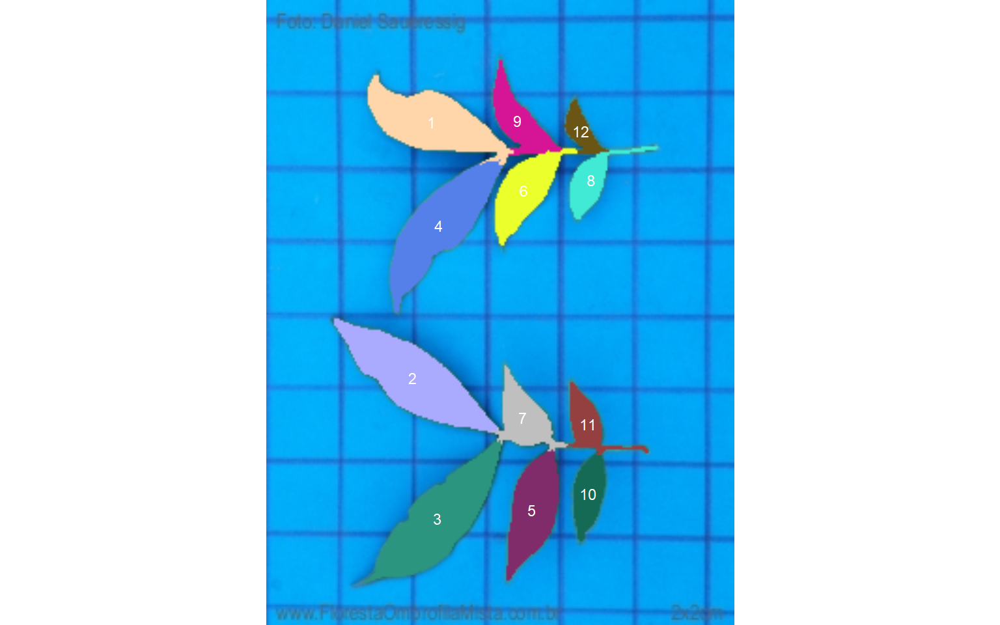
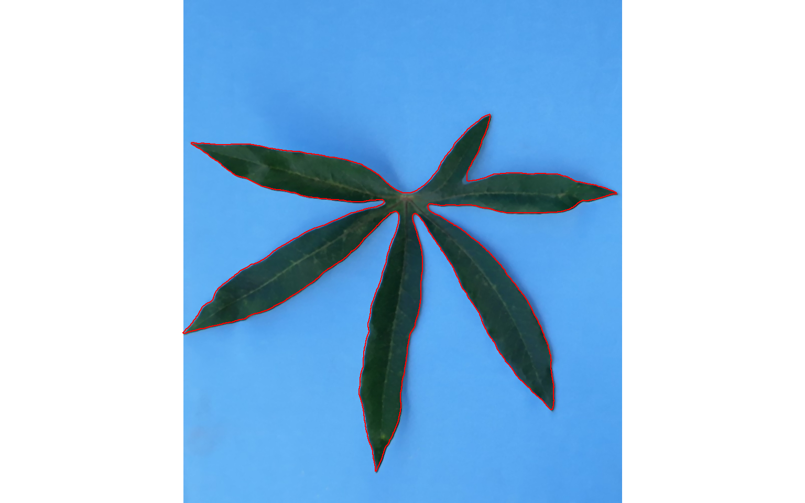
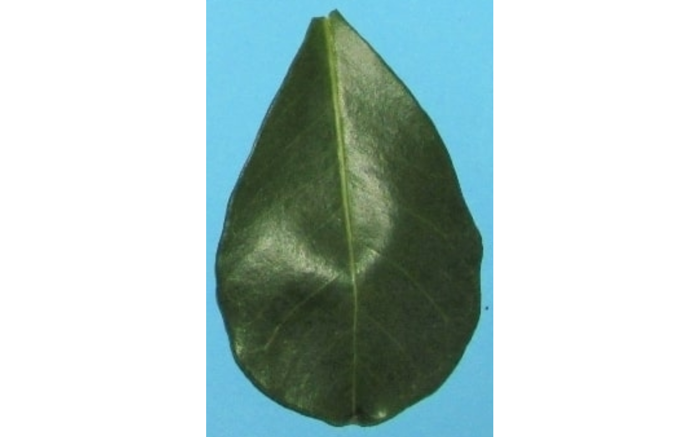
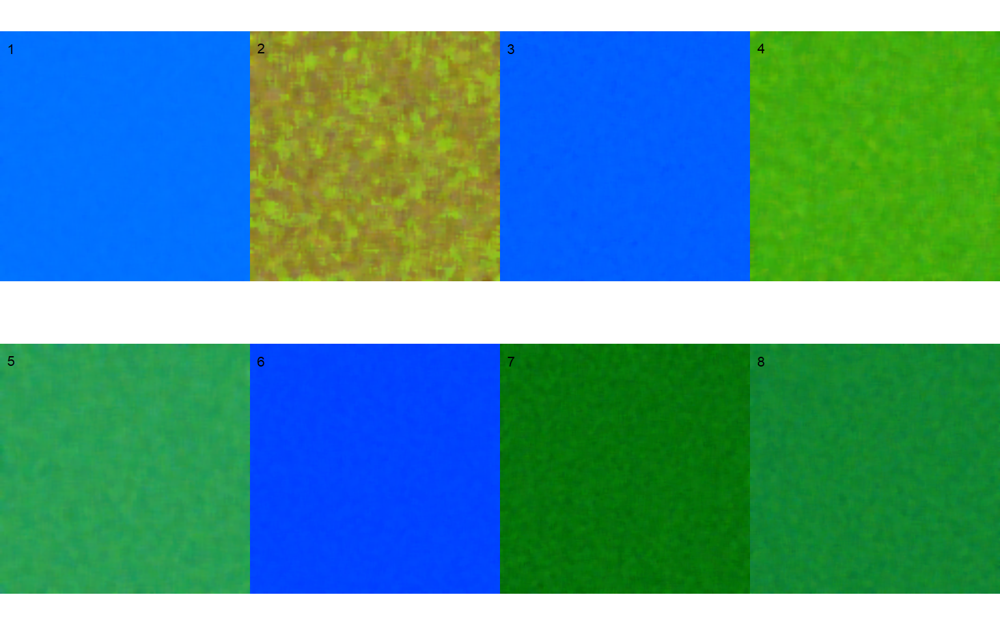
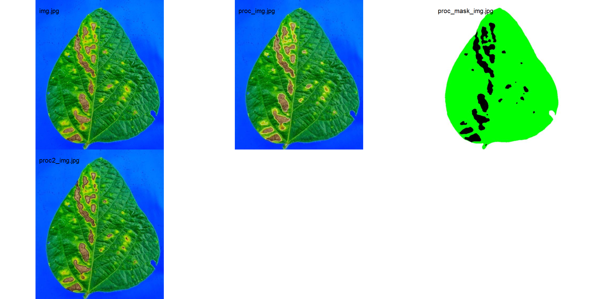
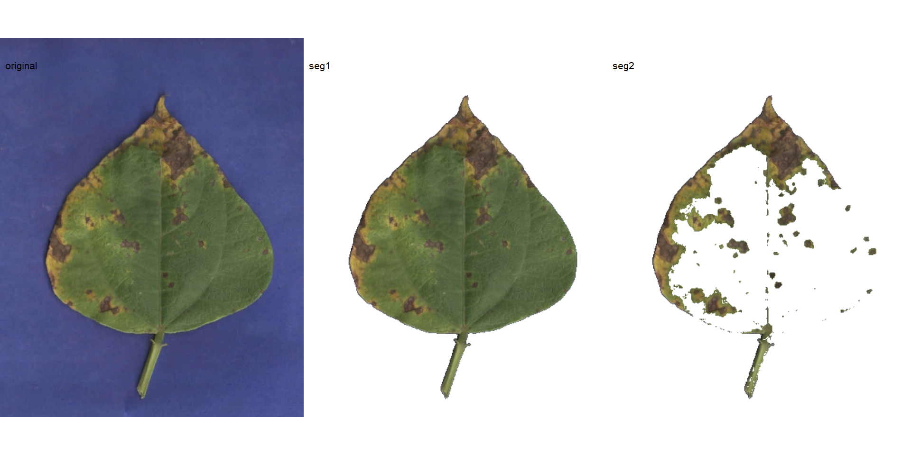
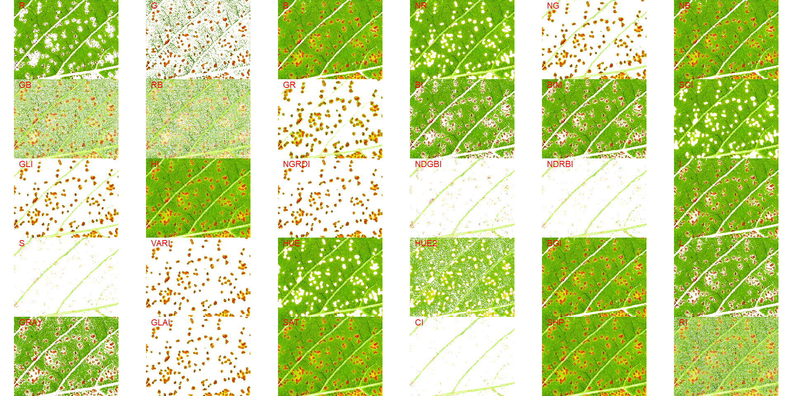
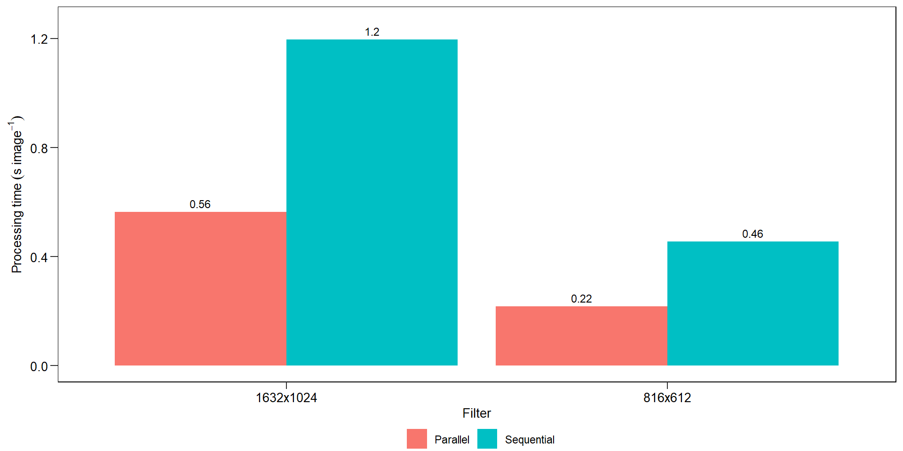

Analysis
1 Packages
To reproduce the examples of this material, the following packages are needed.
library(tidyverse) # data manipulation and plots
## -- Attaching packages --------------------------------------- tidyverse 1.3.1 --
## v ggplot2 3.3.5 v purrr 0.3.4
## v tibble 3.1.4 v dplyr 1.0.7
## v tidyr 1.1.3 v stringr 1.4.0
## v readr 2.0.2 v forcats 0.5.1
## -- Conflicts ------------------------------------------ tidyverse_conflicts() --
## x dplyr::filter() masks stats::filter()
## x dplyr::lag() masks stats::lag()
library(pliman) # plant image analysis
## |=======================================================|
## | Tools for Plant Image Analysis (pliman 1.0.0) |
## | Author: Tiago Olivoto |
## | Type 'vignette('pliman_start')' for a short tutorial |
## | Visit 'https://bit.ly/pliman' for a complete tutorial |
## |=======================================================|
library(DescTools) # concordance correlation coefficient
library(rio) # import/export data
library(LeafArea) # leaf area
library(ggrepel) # plots
library(ggh4x) # plots
library(GGally) # pairwise correlation plots
## Registered S3 method overwritten by 'GGally':
## method from
## +.gg ggplot2
library(patchwork) # arrange plots2 Installing pliman
To install the released version of pliman from CRAN type:
install.packages("pliman")The latest development version of pliman can be installed from the GitHub repository. The installation process requires the devtools package, which needs to be installed first. If you are a Windows user, you should also first download and install the latest version of Rtools.
if(!require(devtools)) install.packages("devtools")After devtools is properly installed, you can install pliman by running the following code. Please, note that the installation will also download the dependencies required to run the package.
devtools::install_github("TiagoOlivoto/pliman")Them, load pliman by running
library(pliman)3 Helper functions
# helper function to compute concordance statistics
get_ccc <- function(df, predicted, real){
if(is.grouped_df(df)){
df %>%
group_modify(~get_ccc(.x, {{predicted}}, {{real}})) %>%
ungroup()
} else{
predicted <- pull(df, {{predicted}})
real <- pull(df, {{real}})
cor <- CCC(real, predicted, na.rm = TRUE)
data.frame(r = cor(real, predicted, use = "pairwise.complete.obs"),
pc = cor$rho.c[[1]],
lwr_ci = cor$rho.c[[2]],
upr_ci = cor$rho.c[[3]],
bc = cor$C.b)
}
}
# helper function to plot the CCC in ggpairs()
custom_ccc <- function(data, mapping,...){
data2 <- data
data2$x <- as.numeric(data[,as_label(mapping$x)])
data2$y <- as.numeric(data[,as_label(mapping$y)])
data2$group <- data[,as_label(mapping$colour)]
correlation_df <- data2 %>%
group_by(group) %>%
summarize(estimate = round(as.numeric(DescTools::CCC(x, y)$rho.c[1]),3))
ggplot(data=correlation_df, aes(x=1,y=group, color = group))+
geom_text(aes(label = paste0("rho[c]: ", estimate)),
data = correlation_df,
parse = TRUE,
size = 4)
}
custom_smoth <- function(data, mapping, method="lm", ...){
p <- ggplot(data = data, mapping = mapping) +
geom_abline(color = "black",
intercept = 0,
size = 0.7,
slope = 1,
linetype = 2) +
geom_point(alpha = 0.6,
shape = 21,
size = 2.5,
stroke = 0,
color = "black")
p
}
# ggplot theme
my_theme <- function(){
theme_grey() %+%
theme(legend.position = "bottom",
legend.box.margin=margin(-10,-10,-10,-10),
legend.title = element_blank(),
axis.ticks.length = unit(0.2, "cm"),
panel.grid = element_blank(),
panel.spacing = unit(0, "cm"),
panel.background = element_rect(color = "black", fill = NA),
axis.text = element_text(color = "black", size = 10),
axis.title = element_text(color = "black", size = 10),
legend.key = element_rect(fill = NA),
strip.background = element_rect(color = "black", fill = NA))
}4 Image manipulation
4.1 Importing images
soy <- image_import("./data/soy_grains.jpg")
soy2 <- image_import("./data/soy_grains_2.jpg")To import a list of images, the argument pattern of the function image_import() is used. All images that match the pattern name are imported into a list.
soy_list <-
image_import(pattern = "soy_",
path = "./data") # choose path directory
names(soy_list)
## [1] "soy_grains.jpg" "soy_grains_2.JPG"4.2 Displaying images
Single images are displayed with plot(). For combining images, the function image_combine() is used. Users can inform either a comma-separated list of objects or a list of objects of class Image.
# Single images
plot(soy)
# Combine images
image_combine(soy, soy2)
# Combine images
image_combine(soy_list)
4.3 Manipulating images
pliman provides a set of image_*() functions to perform image manipulation and transformation of unique images or a list of images based on the EBImage package.
4.3.1 Resize an image
Sometimes resizing of high-resolution images is needed to reduce the processing time. The function image_resize() is used to resize an image. The argument rel_size can be used to resize the image by relative size. For example, by setting rel_size = 50 to an image of width 1280 x 720, the new image will have a size of 640 x 360. This is useful to speed up the time of analysis such as those computed with analyze_objects() and measure_disease().
image_dimension(soy)
##
## ----------------------
## Image dimension
## ----------------------
## Width : 1281
## Height: 910
soy_resized <- image_resize(soy, rel_size = 50)
image_dimension(soy_resized)
##
## ----------------------
## Image dimension
## ----------------------
## Width : 640
## Height: 4554.3.2 Crop an image
Cropping images is useful to remove noises from the image edge, as well as to reduce the size of images before processing. To crop an image, the function image_crop() is used. Users need to inform a numeric vector indicating the pixel range (width and height) that will be maintained in the cropped image.
crop1 <-
image_crop(soy,
width = 170:720,
height = 300:650,
plot = TRUE)
If only width or height are informed, the image will be cropped vertically or horizontally.
crop2 <-
image_crop(soy,
width = 170:720,
plot = TRUE)
If both width and height are missing, an iterative process of image cropping is performed.
# only run in an iterative section
image_crop(soy)Additionally, an automated cropping process can be performed. In this case, the image will be automatically cropped to the area of objects with an edge of five pixels by default.
auto_crop <- image_autocrop(soy, plot = TRUE)
The function image_trim() is used to trim pixels from image edges.
# trim 100 pixels from all edges
soy_trim <- image_trim(soy, edge = 100, plot = TRUE)
# The same is achieved with
soy_trim2 <-
image_trim(soy,
top = 100,
bottom = 100,
left = 100,
right = 100,
plot = TRUE)
# trim 200 pixels from top and bottom
soy_trim3 <-
image_trim(soy,
top = 200,
bottom = 200,
plot = TRUE)# trim to 5 pixels around objects' area4.3.3 Image resolution (DPI)
The function dpi() runs an interactive function to compute the image resolution given a known distance informed by the user. To compute the image resolution (dpi) the user must use the left button mouse to create a line of known distance. This can be done, for example, using a template with known distance in the image (e.g., leaves.JPG).
# only run in an interactive section
leaves <- image_import("./data/leaf_area/leaves.JPG")
dpi(leaves)4.3.4 Rotate an image
image_rotate() is used to rotates the image clockwise by the given angle.
soy_rotated <- image_rotate(soy, angle = 45, plot = TRUE)
4.3.5 Horizontal and vertical reflection
image_hreflect() and image_vreflect() performs vertical and horizontal reflection of images, respectively.
soy_hrefl <- image_hreflect(soy)
soy_vrefl <- image_vreflect(soy)
image_combine(soy, soy_hrefl, soy_vrefl, ncol = 3)
4.3.6 Horizontal and vertical conversion
image_horizontal() and image_vertical() converts (if needed) an image to a horizontal or vertical image, respectively.
soy_h <- image_horizontal(soy)
soy_v <- image_vertical(soy)
image_combine(soy, soy_h, soy_v, ncol = 3)
4.3.7 Filter, blur, contrast, dilatation, and erosion
soy_filter <- image_filter(soy)
soy_blur <- image_blur(soy)
soy_contrast <- image_contrast(soy)
soy_dilatation <- image_dilate(soy)
soy_erosion <- image_erode(soy)
image_combine(soy, soy_filter, soy_blur, soy_contrast, soy_dilatation, soy_erosion)
4.3.8 Exporting images
To export images to the current directory, use the function image_export(). If a list of images is exported, the images will be saved considering the name and extension present in the list. If no extension is present, the images will be saved as *.jpg files.
image_export(soy, "exported.jpg")4.3.9 Combining functions
pliman offers the possibility of combining functions with the new R base (4.1) forward pipe operator |>.
a <- image_import(pattern = "soy_grains",
path = "./data")
image_combine(a)
# reduce resolution, autocrop, vertical rotation,
# create a binary image, export
a |>
image_resize(rel_size = 50) |>
image_blur() |>
image_autocrop() |>
image_vertical() |>
image_binary(index = "NB",
show_image = FALSE,
resize = FALSE) |>
image_combine()
5 Image segmentation
In pliman the following functions can be used to segment an image.
image_binary()to produce a binary (black and white) imageimage_segment()to produce a segmented image (image objects and a white background).image_segment_iter()to segment an image iteratively.
Both functions segment the image based on the value of some image index, which may be one of the RGB bands or any operation with these bands. Internally, these functions call image_index() to compute these indexes. The following indexes are currently available.
| Index | Equation |
|---|---|
| R | R |
| G | G |
| B | B |
| NR | R/(R+G+B) |
| NG | G/(R+G+B) |
| NB | B/(R+G+B) |
| GB | G/B |
| RB | R/B |
| GR | G/R |
| BI | sqrt((R^2+G^2+B^2)/3) |
| BIM | sqrt((R*2+G*2+B*2)/3) |
| SCI | (R-G)/(R+G) |
| GLI | (2*G-R-B)/(2*G+R+B) |
| HI | (2*R-G-B)/(G-B) |
| NGRDI | (G-R)/(G+R) |
| NDGBI | (G-B)/(G+B) |
| NDRBI | (R-B)/(R+B) |
| I | R+G+B |
| S | ((R+G+B)-3*B)/(R+G+B) |
| VARI | (G-R)/(G+R-B) |
| HUE | atan(2*(B-G-R)/30.5*(G-R)) |
| HUE2 | atan(2*(R-G-R)/30.5*(G-B)) |
| BGI | B/G |
| L | R+G+B/3 |
| GRAY | 0.299*R + 0.587*G + 0.114*B |
| GLAI | (25*(G-R)/(G+R-B)+1.25) |
| GRVI | (G-R)/(G+R) |
| CI | (R-B)/R |
| SHP | 2*(R-G-B)/(G-B) |
| RI | R**2/(B*G**3) |
Here, I use the argument index" to test the segmentation based on the RGB and their normalized values. Users can also provide their index with the argument my_index.
soy <- image_import("./data/segmentation/seg_medium.jpg", plot = TRUE)
# Compute the indexes
indexes <- image_index(soy, index = c("R, G, B, NR, NG, NB"))
# Create a raster plot with the RGB values
plot(indexes)
# Create a density with the RGB values
plot(indexes, type = "density")
In this example, we can see the distribution of the RGB values (first row) and the normalized RGB values (second row). The two peaks represent the grains (smaller peak) and the blue background (larger peak). The clearer the difference between these peaks, the better will the image segmentation.
5.1 Segment an image
The function image_segmentation() is used to segment images using image indexes. In this example, I will use the same indexes computed below to see how the image is segmented. The output of this function can be used as input in the function analyze_objects().
segmented <- image_segment(soy, index = c("R, G, B, NR, NG, NB"))
It seems that the "NB" index provided better segmentation. "R" and "NR" resulted in an inverted segmented image, i.e., the grains were considered as background and the remaining as ‘selected’ image. To circumvent this problem, we can use the argument invert in those functions.
image_segment(soy,
index = c("R, NR"),
invert = TRUE)
5.2 Iterative segmentation
The function image_segment_iter() provides an iterative image segmentation, returning the proportions of segmented pixels. This is useful when more than one segmentation procedure is needed. Users can choose how many segmentation to perform, using the argument nseg.
seg_iter <- image_pliman("sev_leaf_nb.jpg", plot = TRUE)
Using a soybean sample leaf (above), I will use the function image_segment_iter to segment the diseased tissue from healthy tissue. The aim is to segment the symptoms into two classes, namely, necrosis (brown areas) and chlorosis (yellow areas), and compute the percentage of each symptom class.
First, we need to find a suitable index for segmentation.
# First segmentation
seg <-
image_segment(seg_iter,
index = "all")
# second segmentation
seg2 <-
image_segment(seg$VARI$image,
index = "all")
Note that the same results can be obtained with image_segment_iter() using an iterative section.
# Only run iteratively
image_segment_iter(seg_iter, nseg = 2)The "VARI" seems to be a suitable index to segment symptoms (necrosis and chlorosis) from healthy tissues. The "GLI" can be used to segment necrosis from chlorosis. Knowing this, we can now use image_segment_iter() explicitly indicating these indexes, as follows
image_segment_iter(seg_iter,
nseg = 2, # two segmentations
index = c("VARI", "GLI"),
ncol = 3)
## image pixels percent
## 1 original 1317600 100.00000
## 2 seg1 399075 30.28802
## 3 seg2 103464 25.92595It can be observed that 30.28% of the original image were characterized as symptoms (both necrosis and chlorosis). Of out this (symptomatic area), 25.92% are necrotic areas. So 7.85% of the total area were considered as necrotic areas (30.288 \(\times\) 0.2592 or 103464/1317600 \(\times\) 100) and 22.43% (30.28 - 7.85 or (399075 - 103464) / 1317600 \(\times\) 100) were considered as chlorotic areas.
Users can use the argument threshold to control how segmentation is made. By default (threshold = "Otsu"), a threshold value based on Otsu’s method is used to reduce the grayscale image to a binary image. If a numeric value is informed, this value will be used as a threshold. Inform any non-numeric value different than "Otsu" to iteratively choose the threshold based on a raster plot showing pixel intensity of the index. For image_segmentation_iter(), a vector (allows a mixed (numeric and character) type) with the same length of nseg can be used.
seg_iter1 <-
image_segment_iter(seg_iter,
nseg = 2, # two segmentations
index = c("VARI", "GLI"),
threshold = c(0.3, "Otsu"),
ncol = 3,
show_image = FALSE)
## image pixels percent
## 1 original 1317600 100.00000
## 2 seg1 195288 14.82149
## 3 seg2 95151 48.72342
seg_iter2 <-
image_segment_iter(seg_iter,
nseg = 2, # two segmentations
index = c("VARI", "GLI"),
threshold = c(0.5, "Otsu"),
ncol = 3,
show_image = FALSE)
## image pixels percent
## 1 original 1317600 100.00000
## 2 seg1 321729 24.41781
## 3 seg2 101883 31.66733
image_combine(seg_iter1$images$seg1,
seg_iter2$images$seg1)Users can then set the argument threshold for their specific case, depending on the aims of the segmentation.
6 Producing a binary image
We can also produce a binary image with image_binary(). Just for curiosity, we will use the indexes "B" (blue) and "NB" (normalized blue). By default, image_binary() rescales the image to 30% of the size of the original image to speed up the computation time. Use the argument resize = FALSE to produce a binary image with the original size.
binary <- image_binary(soy)
# original image size
image_binary(soy,
index = c("B, NB"),
resize = FALSE)
7 Count objects
7.1 Check the better index to segment the image
- Blue background
# wheat (NB)
dir_wb <- "./data/count_objects/images/img_wb_50_1.jpg"
wb <- image_import(image = dir_wb)
image_binary(wb)
# soybean (NB)
dir_sb <- "./data/count_objects/images/img_sb_50_1.jpg"
sb <- image_import(image = dir_sb)
image_binary(sb)
# bean (NR with invert= TRUE)
dir_bb <- "./data/count_objects/images/img_bb_50_1.jpg"
bb <- image_import(image = dir_bb)
image_binary(bb)
### SOYBEAN
# mid-resolution images (_50) and with no filtering
t1 <-
system.time(
sb_res_50_nf <-
analyze_objects(pattern = "sb_50",
dir_original = "./data/count_objects/images",
show_image = FALSE,
parallel = TRUE,
verbose = FALSE)
)
# mid-resolution images (_50) and with filtering
t2 <-
system.time(
sb_res_50_wf <-
analyze_objects(pattern = "sb_50",
dir_original = "./data/count_objects/images",
show_image = FALSE,
parallel = TRUE,
filter = 2,
verbose = FALSE)
)
# high-resolution images (_100) and with no filtering
t3 <-
system.time(
sb_res_100_nf <-
analyze_objects(pattern = "sb_100",
dir_original = "./data/count_objects/images",
show_image = FALSE,
parallel = TRUE,
verbose = FALSE)
)
# low-resolution images (_100) and with filtering
t4 <-
system.time(
sb_res_100_wf <-
analyze_objects(pattern = "sb_100",
dir_original = "./data/count_objects/images",
show_image = FALSE,
parallel = TRUE,
filter = 3,
verbose = FALSE)
)
### WHEAT
# mid-resolution images (_50) and with no filtering
wb_res_50_nf <-
analyze_objects(pattern = "wb_50",
dir_original = "./data/count_objects/images",
show_image = FALSE,
parallel = TRUE,
verbose = FALSE)
# mid-resolution images (_50) and with filtering
wb_res_50_wf <-
analyze_objects(pattern = "wb_50",
dir_original = "./data/count_objects/images",
show_image = FALSE,
parallel = TRUE,
filter = 2,
verbose = FALSE)
# high-resolution images (_100) and with no filtering
wb_res_100_nf <-
analyze_objects(pattern = "wb_100",
dir_original = "./data/count_objects/images",
show_image = FALSE,
parallel = TRUE,
verbose = FALSE)
# low-resolution images (_100) and with filtering
wb_res_100_wf <-
analyze_objects(pattern = "wb_100",
dir_original = "./data/count_objects/images",
show_image = FALSE,
parallel = TRUE,
filter = 3,
verbose = FALSE)
### BEAN
# mid-resolution images (_50) and with no filtering
bb_res_50_nf <-
analyze_objects(pattern = "bb_50",
dir_original = "./data/count_objects/images",
index = "NR",
invert = TRUE,
show_image = FALSE,
parallel = TRUE,
verbose = FALSE)
# mid-resolution images (_50) and with filtering
bb_res_50_wf <-
analyze_objects(pattern = "bb_50",
dir_original = "./data/count_objects/images",
index = "NR",
invert = TRUE,
show_image = FALSE,
parallel = TRUE,
filter = 2,
verbose = FALSE)
# high-resolution images (_100) and with no filtering
bb_res_100_nf <-
analyze_objects(pattern = "bb_100",
dir_original = "./data/count_objects/images",
index = "NR",
invert = TRUE,
show_image = FALSE,
parallel = TRUE,
verbose = FALSE)
# low-resolution images (_100) and with filtering
bb_res_100_wf <-
analyze_objects(pattern = "bb_100",
dir_original = "./data/count_objects/images",
index = "NR",
invert = TRUE,
show_image = FALSE,
parallel = TRUE,
filter = 3,
verbose = FALSE)- white background
# wheat (NB)
dir_ww <- "./data/count_objects/images/img_ww_50_1.jpg"
ww <- image_import(image = dir_ww)
image_binary(ww)
# soybean (NB)
dir_sw <- "./data/count_objects/images/img_sw_50_1.jpg"
sw <- image_import(image = dir_sw)
image_binary(sw)
# bean (G)
dir_bw <- "./data/count_objects/images/img_bw_50_1.jpg"
bw <- image_import(image = dir_bw)
image_binary(bw)
### SOYBEAN
# mid-resolution images (_50) and with no filtering
sw_res_50_nf <-
analyze_objects(pattern = "sw_50",
dir_original = "./data/count_objects/images",
show_image = FALSE,
parallel = TRUE,
verbose = FALSE)
# mid-resolution images (_50) and with filtering
sw_res_50_wf <-
analyze_objects(pattern = "sw_50",
dir_original = "./data/count_objects/images",
show_image = FALSE,
parallel = TRUE,
filter = 2,
verbose = FALSE)
sw_res_100_nf <-
analyze_objects(pattern = "sw_100",
dir_original = "./data/count_objects/images",
show_image = FALSE,
parallel = TRUE,
verbose = FALSE)
# low-resolution images (_100) and with filtering
sw_res_100_wf <-
analyze_objects(pattern = "sw_100",
dir_original = "./data/count_objects/images",
show_image = FALSE,
parallel = TRUE,
filter = 3,
verbose = FALSE)
### WHEAT
# mid-resolution images (_50) and with no filtering
ww_res_50_nf <-
analyze_objects(pattern = "ww_50",
dir_original = "./data/count_objects/images",
show_image = FALSE,
parallel = TRUE,
verbose = FALSE)
# mid-resolution images (_50) and with filtering
ww_res_50_wf <-
analyze_objects(pattern = "ww_50",
dir_original = "./data/count_objects/images",
show_image = FALSE,
parallel = TRUE,
filter = 2,
verbose = FALSE)
# high-resolution images (_100) and with no filtering
ww_res_100_nf <-
analyze_objects(pattern = "ww_100",
dir_original = "./data/count_objects/images",
show_image = FALSE,
parallel = TRUE,
verbose = FALSE)
# low-resolution images (_100) and with filtering
ww_res_100_wf <-
analyze_objects(pattern = "ww_100",
dir_original = "./data/count_objects/images",
show_image = FALSE,
parallel = TRUE,
filter = 3,
verbose = FALSE)
### BEAN
# mid-resolution images (_50) and with no filtering
bw_res_50_nf <-
analyze_objects(pattern = "bw_50",
dir_original = "./data/count_objects/images",
index = "B",
show_image = T,
parallel = F,
verbose = FALSE)
# mid-resolution images (_50) and with filtering
bw_res_50_wf <-
analyze_objects(pattern = "bw_50",
dir_original = "./data/count_objects/images",
index = "B",
show_image = FALSE,
parallel = TRUE,
filter = 2,
verbose = FALSE)
# high-resolution images (_100) and with no filtering
bw_res_100_nf <-
analyze_objects(pattern = "bw_100",
dir_original = "./data/count_objects/images",
index = "B",
show_image = FALSE,
parallel = TRUE,
verbose = FALSE)
# low-resolution images (_100) and with filtering
bw_res_100_wf <-
analyze_objects(pattern = "bw_100",
dir_original = "./data/count_objects/images",
index = "B",
show_image = FALSE,
parallel = TRUE,
filter = 3,
verbose = FALSE)7.2 Concordance
validation <- import("data/count_objects/count_data.xlsx")
### overall concordance
get_ccc(validation, real, predicted)### concordance by resolution, filtering, crop, background
df_ccc <-
validation %>%
group_by(filter, resolution, background, crop) %>%
get_ccc(real, predicted) %>%
mutate(rho = paste0("rho[c]:~", round(pc, 3)),
bc = paste0("C[b]:~", round(bc, 3)),
r = paste0("r:~~~", round(r, 3)))
ggplot(validation, aes(real, predicted))+
geom_abline(intercept = 0 , slope = 1, linetype = 2) +
geom_point(aes(fill = factor(crop)),
color = "black",
shape = 21,
size = 2.5,
alpha = 0.75,
stroke = 0.05) +
facet_nested(filter*resolution ~ background*crop ) +
geom_text(aes(label=rho),
x = 5,
y = 135,
hjust = 0,
size = 3,
data = df_ccc,
parse = TRUE) +
labs(x = "Actual number of grains",
y = "Predicted number of grains") +
my_theme() +
coord_fixed() +
scale_x_continuous(limits = c(0, 160),
breaks = seq(0, 160, by = 50)) +
scale_y_continuous(limits = c(0, 160),
breaks = seq(0, 160, by = 50))ggsave("figs/count_objects.pdf", width = 9, height = 7)7.3 Source of errors
In the following plot, the quantification of the image img_bw_50_1.jpg (bean with blue background) is shown. When no filtering is used, some pixels within grains are considered as background, overestimating the number of grains when processing the image. The use of filter = 2 improved the image binarization, providing an accuracy of 1.
errors <- image_import("./figs/bean_filter.png", plot = TRUE)7.4 Benchmarking
t1 <-
system.time(
a <-
analyze_objects(pattern = "_50",
dir_original = "./data/count_objects/images",
show_image = FALSE,
parallel = TRUE,
verbose = FALSE)
)
t2 <-
system.time(
analyze_objects(pattern = "_50",
dir_original = "./data/count_objects/images",
show_image = FALSE,
parallel = TRUE,
verbose = FALSE,
filter = 2)
)
t3 <-
system.time(
a <-
analyze_objects(pattern = "_100",
dir_original = "./data/count_objects/images",
show_image = FALSE,
parallel = TRUE,
verbose = FALSE)
)
t4 <-
system.time(
a <-
analyze_objects(pattern = "_100",
dir_original = "./data/count_objects/images",
show_image = FALSE,
parallel = TRUE,
filter = 2,
verbose = FALSE)
)
t5 <-
system.time(
a <-
analyze_objects(pattern = "_50",
dir_original = "./data/count_objects/images",
show_image = FALSE,
parallel = FALSE,
verbose = FALSE)
)
t6 <-
system.time(
a <-
analyze_objects(pattern = "_50",
dir_original = "./data/count_objects/images",
show_image = FALSE,
parallel = FALSE,
filter = 2,
verbose = FALSE)
)
t7 <-
system.time(
a <-
analyze_objects(pattern = "_100",
dir_original = "./data/count_objects/images",
show_image = FALSE,
parallel = FALSE,
verbose = FALSE)
)
t8 <-
system.time(
a <-
analyze_objects(pattern = "_100",
dir_original = "./data/count_objects/images",
show_image = FALSE,
parallel = FALSE,
filter = 2,
verbose = FALSE)
)
bench <- import("data/count_objects/time.xlsx")
ggplot(bench, aes(filter, avg, fill = strategy)) +
geom_col(position = position_dodge(width = 0.9)) +
facet_wrap(~resolution) +
scale_y_continuous(expand = expansion(c(0.05, 0.1))) +
geom_text(aes(label = round(avg, 2)),
position = position_dodge(width = 0.9),
vjust = -0.5,
hjust = 0.5,
size = 3) +
my_theme() +
labs(x = "Filter",
y = expression(Processing~time~(s~image^{-1})))ggsave("figs/benchmarking.pdf", width = 4, height = 4)7.5 A little bit more
7.5.1 Cells
In the following two examples, I show some variations in the arguments of analyze_objects() to count cells and pollens.
Source of the image: https://www.youtube.com/watch?v=8c68qIz_ftw
cell <- image_import("./data/segmentation/cell.png", plot = TRUE)
image_index(cell, "all")cell_meas <-
analyze_objects(cell,
index = "L",
invert = TRUE,
show_segmentation = TRUE,
show_contour = FALSE,
marker = "point")cell_meas$statisticsSource of the image: https://www.youtube.com/watch?v=PqHFsmS1_JY
cell2 <- image_import("./data/segmentation/cell2.png", plot = TRUE)image_index(cell2, "all")ind_bim <- image_index(cell2, "BIM")plot(ind_bim)
# chose the BIM index and 0.6 as threshold value
cell2_meas <-
analyze_objects(cell2,
index = "BIM",
invert = TRUE, # invert the segmentation
show_contour = FALSE,
threshold = 0.6,
marker = "point",
marker_col = "red")cell2_meas$statisticsSource of the image: https://www.youtube.com/watch?v=PqHFsmS1_JY
cell3 <- image_import("./data/segmentation/cell3.jpg", plot = TRUE)image_index(cell3, "all")
# chose the G index
cell3_meas <-
analyze_objects(cell3,
index = "G",
invert = TRUE,
show_segmentation = TRUE,
show_contour = FALSE,
marker = "id",
marker_col = "black",
marker_size = 0.5)cell3_meas$statistics7.5.2 Pollen
Source of the image: https://academic.oup.com/aob/article/104/5/1005/138988
pollen <- image_import("./data/segmentation/pollen.png", plot = TRUE)image_index(pollen, "all")ind_bim <- image_index(pollen, "L")plot(ind_bim)
# chose the L index
pollen_meas <-
analyze_objects(pollen,
index = "L",
invert = TRUE, # invert the segmentation
show_contour = FALSE,
tolerance = 0,
marker = "point",
marker_col = "red")pollen_meas$statistics8 Object features
In the following example, I show how to compute the object contourn, center of mass and the maximum and minimum radius (in pixel units). In this case, the minimum and maximum diameter (computed with analyze_objects()) can be used as a measure to approximate the width and length of the bean grain, respectively.
bean <- image_import("./data/segmentation/bean.jpg")
bean_meas <-
analyze_objects(bean,
index = "HI",
fill_hull = TRUE,
watershed = FALSE,
show_contour = FALSE,
col_background = "white")
# contour
cont <- object_contour(bean,
index = "HI",
watershed = FALSE,
show_image = FALSE)
plot_contour(cont, col = "red", lwd = 3)
# center of mass
# maximum and minimum radius
cm <- poly_mass(cont)
plot_mass(cm,
col = "red",
arrow = TRUE)A second example
bean2 <- image_import("./data/segmentation/bean2.jpg")
bean2_meas <-
analyze_objects(bean2,
index = "G",
fill_hull = TRUE,
watershed = FALSE,
show_contour = FALSE,
col_background = "black")
# contour
cont <- object_contour(bean2,
index = "G",
watershed = FALSE,
show_image = FALSE)
# smooth the perimeter with fewer vertices (50)
sp <- poly_spline(cont, vertices = 50)
plot_contour(sp, col = "white", lwd = 2)
# center of mass
cm <- poly_mass(sp)
plot_mass(cm,
col = "white",
arrow = TRUE)9 Root length
In the following example, I show how to measure the root length of soybean seedlings. The images were gathered from Silva et al. 2019 1.
roots <-
image_import(pattern = "root",
path = "./data/roots",
plot = TRUE)
r1 <- roots[[1]]To measure the root length, first, we will ned to segment the root. Let’s start choosing an index to segment the seedlings from the background
image_binary(r1, index = "all")The index "B" can be used. To obtain a correct segmentation, the argument invert is used.
r1_meas <-
analyze_objects(r1,
index = "B",
marker = "id",
invert = TRUE)Note that the watershed segmentation segmented connected objects into multiple, small objects. We can improve this segmentation using the argument tolerance (a few attempts will be needed to find a suitable value).
r1_meas <-
analyze_objects(r1,
index = "B",
marker = "id",
invert = TRUE,
tolerance = 3.5)
Much better, but yet not what we are looking for. Note that both roots and cotyledons were selected. We can, however, use a constraint in object selection that in this case can be the eccentricity of the object. By using the arguments lower_eccent and upper_eccent, objects can be selected regarding their eccentricity.
r1_meas$results[c("id", "eccentricity")]It seems that roots have eccentricity higher than 0.95. So, we can select only roots with lower_eccent argument, as follows.
r1_meas <-
analyze_objects(r1,
index = "B",
marker = "id",
invert = TRUE,
tolerance = 3,
lower_eccent = 0.95)Now, we have the desired segmentation. Considering that the image resolution is known, the measures can be corrected with get_measures(). For teaching purposes, I will assume a dpi = 150 in this case.
r1_meas_cor <- get_measures(r1_meas, dpi = 150)
r1_meas_corIn this case, the root length can be estimated by the diam_max, which is the maximum diameter of the object.
plot(r1)
plot_measures(r1_meas_cor, measure = "diam_max")The second image can be analyzed in the same way.
r2 <- roots[[2]]
r2_meas <-
analyze_objects(r2,
lower_eccent = 0.95,
index = "B",
invert = TRUE,
tolerance = 3.5)
r2_meas_cor <- get_measures(r2_meas, dpi = 150)
plot_measures(r2_meas_cor, measure = "diam_max")10 Leaf area
We can use analyze_objects() to compute object features such as area, perimeter, radius, etc. This can be used, for example, to compute leaf area.
Let’s compute the leaf area of leaves with analyze_objects(). First, we use image_segmentation() to identify candidate indexes to segment foreground (leaves) from background.
leaves <- image_import("./data/leaf_area/leaves2.JPG", plot = TRUE)
image_segment(leaves, index = "all")
G (Green) and NB (Normalized Blue) are two possible candidates to segment the leaves from the background. We will use the NB index here (default option in analyze_objects()). The measurement of the leaf area in this approach can be done in two main ways: 1) using an object of known area, and 2) knowing the image resolution in dpi (dots per inch).
10.1 Using an object of known area
- Count the number of objects (leaves in this case)
Here, we use the argument marker = "id" of the function analyze_objects() to obtain the identification of each object (leaf), allowing for further adjustment of the leaf area.
count <- analyze_objects(leaves, marker = "id")
Note that “holes” in some leaves resulted in the segmentation of one leaf in more than one object (e.g., 5, 8, 22, 25, 18, 28). This will not affect the total leaf area, but the area of individual leaves and the average leaf area. This can be solved by either setting the argument fill_hull = TRUE or watershed = FALSE (To don’t implement the watershed-based object segmentation). Let’s see how much better we can go.
count <-
analyze_objects(leaves,
marker = "id",
fill_hull = TRUE)
Almost there! Due to the morphology of the leaf composed by objects 2 and 23, it was segmented into two objects. This can be solved by setting the argument object_size = "large" that will change the default (medium) values for tolerance and extension arguments.
count <-
analyze_objects(leaves,
marker = "id",
fill_hull = TRUE,
object_size = "large")
When the objects are not touching each other, the argument watershed = FALSE would be a better option.
analyze_objects(leaves,
watershed = FALSE)And here we are! Now, all leaves were identified correctly, but all measures were given in pixel units. The next step is to convert these measures to metric units.
- Convert the leaf area by the area of the known object
The function get_measures() is used to adjust the leaf area using object 10, a square with a side of 5 cm (25 cm\(^2\)).
area <-
get_measures(count,
id = 10,
area ~ 25)
## -----------------------------------------
## measures corrected with:
## object id: 10
## area : 25
## -----------------------------------------
## Total : 822.014
## Average : 35.74
## -----------------------------------------
area# plot the area to the segmented image
image_segment(leaves, index = "NB", verbose = FALSE)
plot_measures(area,
measure = "area",
col = "red") # default is "white"10.2 knowing the image resolution in dpi (dots per inch)
When the image resolution is known, the measures in pixels obtained with analyze_objects() are corrected by the image resolution. The function dpi() can be used to compute the dpi of an image, provided that the size of any object is known. See the dpi section for more details. In this case, the estimated resolution considering the calibration of object 10 was ~50.8 DPIs. We inform this value in the dpi argument of get_measures9).
area2 <- get_measures(count, dpi = 50.8)
# compute the difference between the two methods
sum(area$area - area2$area)
## [1] 7.72410.3 Comparing pliman and LeafArea
# Find the exact distance of 826 pixels at 100 dpi
#
kd <- pixels_to_cm(826, 100)
kd
# change according to your PC
directory <- "E:/Desktop/paper_pliman/data/leaf_area/imagej"
path_imgj <- "C:/Program Files/ImageJ"
system.time(
lfa <-
run.ij(path.imagej = path_imgj,
set.directory = directory,
known.distance = 20.9804, # run.ig has 21 as default.
save.image = FALSE,
trim.pixel = 0)
)
# total time: ~10.9 ssystem.time(
plm <-
analyze_objects(pattern = "img", # name pattern
dir_original = "./data/leaf_area/imagej",
index = "B", # index to segment leaf and background
watershed = FALSE, # don't use watershed segmentation
show_image = FALSE, # don't show image after processing
parallel = TRUE, # multiple sections
verbose = FALSE)
)
## usuário sistema decorrido
## 0.18 0.05 6.32
# adjust the measures considering 100 dpi (the same as LeafArea)
area <- get_measures(plm, dpi = 100)df_area <- import("./data/leaf_area/leaf_area.xlsx")
hlt <- c("img90", "img87", "img107")
df_area <-
df_area %>%
mutate(res = pliman - leaf_area,
label = ifelse(sample %in% hlt, sample, NA))
# compute the Lin's concordance correlation
df_cor <- df_area[1:150,]
ccc <-
df_cor %>%
group_by(background) %>%
get_ccc(leaf_area, pliman) %>%
mutate(rho = paste0("rho[c]:~", round(pc, 4),
"[(",round(lwr_ci,4), "-",
round(upr_ci,4), ")]" ))
# create the plot
ggplot(df_area, aes(leaf_area, pliman)) +
geom_abline(intercept = 0, slope = 1,
linetype = 2) +
geom_point(aes(fill = background),
shape = 25,
size = 3,
alpha = 0.6,
color = "black",
stroke = 0.05,
data = subset(df_area, sample %in% hlt)) +
geom_point(aes(fill = background),
shape = 21,
size = 3,
alpha = 0.6,
color = "black",
stroke = 0.05,
data = subset(df_area, !sample %in% hlt)) +
geom_text_repel(aes(label = label)) +
geom_text(aes(label=rho, color = background),
show.legend = FALSE,
x = c(10, 10),
y = c(240, 260),
hjust = 0,
size = 4,
data = ccc,
parse = TRUE) +
scale_x_continuous(limits = c(0, 275), breaks = seq(0, 275, by = 50)) +
scale_y_continuous(limits = c(0, 275), breaks = seq(0, 275, by = 50)) +
labs(x = "LeafArea",
y = "pliman") +
my_theme() +
coord_fixed()
## Warning: Removed 16 rows containing missing values (geom_point).
## Warning: Removed 163 rows containing missing values (geom_text_repel).
ggsave("figs/pliman_leafarea.pdf", width = 4, height = 4)
## Warning: Removed 16 rows containing missing values (geom_point).
## Warning: Removed 163 rows containing missing values (geom_text_repel).10.4 Variations in the arguments of analyze_objects()
Here, I show how to produce the masks shown in Figure 8 of the article, using the image img90 as an example. The masks are saved into a temporary directory (dir_processed = tempdir()) and combined later.
img90 <- image_import("img90.jpg",
path = "./data/leaf_area/imagej",
plot = TRUE)
# pliman 1
analyze_objects(img90,
save_image = TRUE,
show_image = FALSE,
prefix = "proc1_",
dir_processed = tempdir(),
index = "B", # index to segment leaf and background
fill_hull = TRUE, # fill the injuried area
show_original = FALSE)# create a mask (not original image)
# pliman 2
analyze_objects(img90,
save_image = TRUE,
show_image = FALSE,
prefix = "proc2_",
dir_processed = tempdir(),
index = "B", # index to segment leaf and background
fill_hull = FALSE, # don't fill the injuried area (default)
show_original = FALSE)# create a mask (not original image)
# pliman 3
analyze_objects(img90,
save_image = TRUE,
show_image = FALSE,
prefix = "proc3_",
dir_processed = tempdir(),
index = "B", # index to segment leaf and background
fill_hull = FALSE, # don't fill the injuried area (default)
show_contour = FALSE, # don't show object contour
show_original = TRUE, # show original object
col_background = "black")# black background
# pliman 4
analyze_objects(img90,
save_image = TRUE,
show_image = FALSE,
prefix = "proc4_",
dir_processed = tempdir(),
index = "B", # index to segment leaf and background
fill_hull = FALSE, # don't fill the injuried area (default)
show_original = FALSE, # show original object
col_background = "black",# black background
col_foreground = "green")# green foreground
variations <- image_import(pattern = "proc", path = tempdir())
image_combine(variations, col = "red")
11 Leaf shape
The function analyze_objects() computes a range of object features that can be used to study leaf shape. As a motivating example, I will use the image potato_leaves.png, which was gathered from Gupta et al. (2020)2
potato <- image_import("data/leaf_area/potato_leaves.png", plot = TRUE)
pot_meas <-
analyze_objects(potato,
watershed = FALSE,
marker = "id",
show_chull = TRUE) # shows the convex hullpot_meas$resultsThree key measures (in pixel units) are:
areais the area of the object.area_chis the area of the convex hull.perimeteris the perimeter of the object.
Using these measures, circularity and solidity are computed as shown in (Gupta et al, 2020).
\[ circularity = 4\pi(area / perimeter^2)\]
\[solidity = area / area\_ch\]
\[\sqrt{1-a^2/b^2}\]
Circularity is influenced by serrations and lobing. Solidity is sensitive to leaves with deep lobes, or with a distinct petiole, and can be used to distinguish leaves lacking such structures. Unlike circularity, it is not very sensitive to serrations and minor lobings, since the convex hull remains largely unaffected.
11.1 Object contour
Users can also obtain the object contour and convex hull as follows:
cont <-
object_contour(potato,
watershed = FALSE,
show_image = FALSE)
plot(potato)
plot_contour(cont, col = "red", lwd = 3)
11.2 Convex hull
The function object_contour() returns a list with the coordinate points for each object contour that can be further used to obtain the convex hull with conv_hull().
conv <- conv_hull(cont)
plot(potato)
plot_contour(conv, col = "red", lwd = 3)
11.3 Area of the convex hull
Then, the area of the convex hull can be obtained with poly_area().
(area <- poly_area(conv))
## $`1`
## [1] 54604
##
## $`2`
## [1] 76661.5
##
## $`3`
## [1] 6315411.4 Leaves as ggplot2 plot
# create a data frame for contour and convex hull
df_cont <- bind_rows(cont, .id = "object")
df_conv <- bind_rows(conv, .id = "object")
# create a plot
ggplot(df_cont, aes(X1, X2, group = object)) +
geom_polygon(aes(fill = object)) +
geom_polygon(data = df_conv,
aes(x, y, fill = object),
alpha = 0.3) +
theme_void() +
theme(legend.position = "bottom")
12 Simple and compound leaves
A simple leaf blade is undivided. The blade of a compound leaf is divided into several leaflets. In the following examples, I will show how to analyze simple and compound leaves with analyze_objects(), mainly if the goal is to obtain the measures for each leaf (e.g., mean area), where the number of objects (leaves) will influence the results.
The following images by Daniel Saueressig were obtained from the “Sistema de Identificação Dendrológica Online - Floresta Ombrófila Mista” and show examples of simple and compound leaves.
imgs <-
image_import(c("simple.jpg", "compound.jpg"),
path = "./data/leaf_area",
plot = TRUE)
12.1 Simple leaves
Analyzing non-touching simple leaves is fairly simple. We already saw that the normalized blue index provides satisfactory object segmentation using images with a blue background like in this case. So, the default option (index = "NB") is used. The squares in the background have 4 cm\(^2\). With this information, it is possible to obtain the image resolution with dpi(simple), which will be useful to adjust the measures. In this case, the estimated dpi is 48.65.
simple <- imgs$simple.jpg
sarea <- analyze_objects(simple, marker = "id")Note that with the default settings, the simple leaf was partitioned into small, segmented leaves. As shown in section 8.1 this can be solved by either using object_size = "large" or watershed = FALSE, to omit the watershed segmentation algorithm. The last is used here.
sarea <-
analyze_objects(simple,
watershed = FALSE,
marker = "id",
show_chull = TRUE)
sarea_cor <- get_measures(sarea, dpi = 48.65)
sarea_cor12.2 Compound leaves
For compound leaves, if the watershed segmentation is used, leaflets will probably be considered as different leaves, as can be seen below.
compound <- imgs$compound.jpg
carea <-
analyze_objects(compound,
show_segmentation = TRUE,
show_contour = FALSE,
marker = "id")
Therefore, using watershed = FALSE will solve this problem, since all leaflets connected by at least one pixel will be considered part of the same leaf.
carea <-
analyze_objects(compound,
watershed = FALSE,
show_segmentation = TRUE,
show_contour = FALSE,
show_chull = TRUE,
marker = "id")
carea_cor <- get_measures(carea, dpi = 49.5)
carea_cor13 Several images of the same sample
If users need to analyze several images of the same sample the images of the same sample should share the same filename prefix, which is defined as the part of the filename preceding the first hyphen (-) or underscore (_). Then, when using get_measures(), the measures of leaf images named, for example, F1-1.jpeg, F1_2.jpeg, and F1-3.jpeg will be combined into a single image (F1), shown in the merge object. This is useful, for example, to analyze large leaves that need to be split into multiple images, or several leaves belonging to the same sample that cannot be scanned in a unique image.
In the following example, five images will be used as motivating examples. Each image has leaves from different species. The images were split into different images sharing the same prefix (e.g., L1_*, L2_*, and so on). Note that to ensure that all images are processed, all images must share a common pattern, in this case (“L”). The three points at the right-bottom corner have a known distance of 5 cm between them, which can be used to extract the image dpi with dpi(). Just for teaching purposes, I will consider that all the images have a resolution of 100 dpi.
path_multiple <- "./data/leaf_area/multiple"
# whole images
imgs <-
image_import(pattern = "leaf",
path = path_multiple,
plot = TRUE,
ncol = 2)
# sample images
sample_imgs <-
image_import(pattern = "L",
path = path_multiple,
plot = TRUE,
ncol = 5)13.1 Compute the measures for the subsamples
Here, I will use the pattern = "L" to indicate that all the images with this pattern name should be analyzed. The green index ("G") is used to segment the leaves and watershed = FALSE is used to omit the watershed segmentation algorithm.
merged <-
analyze_objects(pattern = "L",
index = "B",
watershed = FALSE,
dir_original = path_multiple)
## Processing image L1_1 |==== | 8% 00:00:00 
## Processing image L1_2 |======= | 17% 00:00:00 ## Processing image L2_1 |========== | 25% 00:00:00 ## Processing image L2_2 |============== | 33% 00:00:00 ## Processing image L3_1 |================== | 42% 00:00:01 ## Processing image L3_2 |===================== | 50% 00:00:01 ## Processing image L3_3 |======================== | 58% 00:00:01 ## Processing image L4_1 |============================ | 67% 00:00:01 ## Processing image L4_2 |================================ | 75% 00:00:02 ## Processing image L4_3 |=================================== | 83% 00:00:02 
## Processing image L5_1 |====================================== | 92% 00:00:03 ## Processing image L5_2 |==========================================| 100% 00:00:03
## --------------------------------------------
## Image Objects
## L1_1 1
## L1_2 1
## L2_1 2
## L2_2 3
## L3_1 1
## L3_2 1
## L3_3 1
## L4_1 2
## L4_2 2
## L4_3 3
## L5_1 3
## L5_2 3
## --------------------------------------------
## Done!Using the function get_measures() it is possible to convert the measures from pixel to metric (cm\(^2\)) units.
merged_cor <- get_measures(merged, dpi = 100)Note that the merged_cor is a list with three objects
results: a data frame that contains the measures for each object (in this case leaf) of each analyzed image.
merged_cor$resultssummary: a data frame that contains the summary of the results, containing the number of objects in each image (n) the sum, mean, and standard deviation of the area of each image, as well as the mean value for all the other measures (perimeter, radius, etc.)
merged_cor$summarymerge: a data frame that contains the results merged by the image prefix. Note that in this case, the results are presented by L1, L2, L3, L4, and L5.
merged_cor$mergeThe area_sum of img L1 is the sum of the two leaves (one in each image)
sum(merged_cor$results$area[1:2])
## [1] 195.0113.2 Compute the measures for the whole images
whole <-
analyze_objects(pattern = "leaf",
index = "B",
watershed = FALSE,
dir_original = path_multiple)
## Processing image leaf1 |======== | 20% 00:00:00 ## Processing image leaf2 |================ | 40% 00:00:00 ## Processing image leaf3 |========================= | 60% 00:00:01 ## Processing image leaf4 |================================= | 80% 00:00:01 ## Processing image leaf5 |=========================================| 100% 00:00:02
## --------------------------------------------
## Image Objects
## leaf1 2
## leaf2 5
## leaf3 3
## leaf4 7
## leaf5 6
## --------------------------------------------
## Done!whole_cor <- get_measures(whole, dpi = 100)
whole_cor$summary13.3 Area and solidity for different species
# isolate the object 2 of each leaf
samples <-
object_isolate(imgs,
id = 2,
index = "HUE2",
watershed = FALSE)
image_combine(samples, ncol = 5)
df_leaf <-
merged_cor$results %>%
separate(img, into = c("img", "code"))
# leaf area of the different species
p1 <-
ggplot(df_leaf, aes(x = img, y = area)) +
geom_boxplot() +
geom_jitter(color = "red") +
labs(x = "Image", y = expression(Area~(cm^2)))
# solidity of the different species
p2 <-
ggplot(df_leaf, aes(x = img, y = solidity)) +
geom_boxplot() +
geom_jitter(color = "red") +
labs(x = "Image", y = "Leaf solidity")
p1 + p2 14 RGB values for each object
To obtain the RGB intensity of each image object we use the argument object_rgb = TRUE in the function analyze_objects(). In this example,
img <- image_import("./data/objects_rgb/thetrazolium.jpg")
# identify the index that better segments the image
a <- image_binary(img, "all")
The index HUE2 was chosen to segment the grains from the background. The mean of blue values will be computed by declaring object_index = "B".
ids <-
analyze_objects(img,
index = "HUE2",
object_index = "B",
fill_hull = TRUE,
marker = "id",
marker_col = "black")
14.1 Plot the index
Here, I use image_segment() and plot_measures() to plot the mean of blue values for each object.
image_segment(img,
index = "HUE2",
verbose = FALSE)
plot_measures(ids,
measure = "B", # plot the mean of blue values for each object
col = "black")
It seems that grains with mean blue values higher than 0.3 present some level of damage. Users can then work with this feature and adapt it to their case.
length(which(ids$results$index > 0.3))
## [1] 014.2 Large number of objects
When a lot of objects exist, the parallel = TRUE argument will speed up the extraction of the RGB values. In the following example, an image with 1343 grains of Vicia cracca is analyzed. The grains with an average red value higher than 0.25 are highlighted.
img <- image_import("./data/objects_rgb/vicia.jpg")
vicia <-
analyze_objects(img,
index = "B",
object_index = "R",
show_image = FALSE,
parallel = TRUE)
id <- which(vicia$object_index$index > 0.25)
cont <-
object_contour(img,
index = "B",
show_image = FALSE)
plot(img)plot_contour(cont, id = id)
# create an histogram of the RGB values for the two classes of grains
rgbs <-
vicia$object_rgb %>%
mutate(type = ifelse(object %in% id, "Highlighted ", "Not highlighted")) %>%
select(-object) %>%
pivot_longer(-type)
ggplot(rgbs, aes(x = value)) +
geom_density(aes(fill = name), alpha = 0.5) +
facet_wrap(~type)15 Object identification (id)
Knowing the object identification (id) is useful, for example, when correcting the objects’ measures by the measure of some object, e.g., with get_measures(). To get the object id, we use object_id().
img <- image_pliman("la_leaves.jpg")
object_id(img)16 Object coordinates
Users can get the coordinates for all or desired objects with object_coord(). When the id argument is set to NULL (default), a bounding rectangle is drawn including all the objects. Set id = "all" to compute the coordinates for all objects in the image, or use a numeric vector to indicate the objects to compute the coordinates
# Get the coordinates for a bounding rectangle around all objects
object_coord(img)
## $col_min
## [1] 13
##
## $col_max
## [1] 692
##
## $row_min
## [1] 21
##
## $row_max
## [1] 641
# Get the coordinates for all objects
object_coord(img, id = "all")## $col_min
## [1] 320 13 304 21 358 619
##
## $col_max
## [1] 641 297 606 288 505 692
##
## $row_min
## [1] 436 338 21 93 268 279
##
## $row_max
## [1] 641 537 202 266 363 348
# Get the coordinates of objects 1 and 3
object_coord(img, id = c(2, 3))
## $col_min
## [1] 13 304
##
## $col_max
## [1] 297 606
##
## $row_min
## [1] 338 21
##
## $row_max
## [1] 537 20217 Isolating objects
To isolate objects, the function object_isolate() is used. In the following example, I will isolate object 1 and set an edge of 10 pixels around the object.
id1 <- object_isolate(img, id = 1, edge = 10)
plot(id1)
18 Phytopathometry
18.1 Single images
# set the path directory
path_soy <- "./data/disease_severity/soybean"
# import images
img <- image_import("leaf.jpg", path = path_soy)
healthy <- image_import("healthy.jpg", path = path_soy)
symptoms <- image_import("sympt.jpg", path = path_soy)
background <- image_import("back.jpg", path = path_soy)
image_combine(img, healthy, symptoms, background, ncol = 4)
18.2 Image palettes
Sample palettes can be made by simply manually sampling small areas of representative images and producing a composite image that will represent each of the desired classes (background, healthy, and symptomatic tissues). Another way is to use the image_palette() function to create sample color palettes
pals <- image_palette(img, npal = 8)
image_combine(pals, ncol = 4)
rust_path <- "./data/disease_severity/soybean_rust/single"
# default settings
res <-
measure_disease(img = img,
img_healthy = healthy,
img_symptoms = symptoms,
img_background = background,
save_image = TRUE,
dir_processed = rust_path)
# create a personalized mask
measure_disease(img = img,
img_healthy = healthy,
img_symptoms = symptoms,
img_background = background,
save_image = TRUE,
show_original = FALSE,
prefix = "proc_mask_",
dir_processed = rust_path)
## $severity
## healthy symptomatic
## 1 89.08467 10.91533
##
## $shape
## NULL
##
## $statistics
## NULL
##
## attr(,"class")
## [1] "plm_disease"
# import generated masks
masks <- image_import(pattern = "img", path = rust_path)
# combine the masks with the original image
image_combine(masks, ncol = 3)
18.3 Variations in image palettes
In the following example, I show a second example with a variation in the color palettes, where only the necrotic area is assumed to be the diseased tissue. Therefore, the symptomatic area will be smaller than the previous one.
# set the path directory
path_soy <- "./data/disease_severity/soybean"
# import images
healthy2 <- image_import("healthy2.jpg", path = path_soy)
symptoms2 <- image_import("sympt2.jpg", path = path_soy)
background2 <- image_import("back2.jpg", path = path_soy)
image_combine(healthy2, symptoms2, background2, ncol = 3)img2 <- img
res <-
measure_disease(img = img2,
img_healthy = healthy2,
img_symptoms = symptoms2,
img_background = background2,
show_image = TRUE,
contour_col = "black",
save_image = TRUE,
prefix = "proc2_",
dir_processed = "./data/disease_severity/soybean_rust/single")
res$severity
imgs_pal <-
image_import(c("proc_img.jpg", "proc2_img.jpg"),
path = "./data/disease_severity/soybean_rust/single")
image_combine(imgs_pal)
18.4 Batch processing
Fifty soybean leaves and 19 bean leaves previously processed in APS Assess software were used. The soybean images were retrieved from https://osf.io/4hbr6, a Plant Disease Severity Annotation Image Database. Thanks to Emerson M. Del Ponte and his collaborators for keeping this important project publicly available.
18.4.1 Soybean rust
18.4.1.1 Using sample palettes
- Soybean leaves to be processed
# image directory
path_soy <- "./data/disease_severity/soybean_rust"
soy_leaves <- image_import(pattern = "soy", path = path_soy)
image_combine(soy_leaves, ncol = 5)
- Image palettes with the different pixel classes
# image directory
path_soy <- "./data/disease_severity/soybean_rust"
soy_palettes <-
image_import(image = c("back.png", "disease.png", "health.png"),
path = path_soy)
image_combine(soy_palettes, ncol = 3)
rust_path <- "./data/disease_severity/soybean_rust"
system.time(
soy_rust <-
measure_disease(pattern = "soy_",
img_symptoms = "disease",
img_healthy = "health",
img_background = "back",
dir_original = rust_path,
dir_processed = paste0(rust_path, "/processed"),
show_contour = FALSE,
save_image = TRUE,
parallel = TRUE)
)
## Image processing using multiple sessions (6). Please wait.
## usuário sistema decorrido
## 0.24 0.01 25.44
soy_rust$severity# image directory
path_soy_proc <- "./data/disease_severity/soybean_rust/processed"
soy_proc <- image_import(pattern = "proc", path = path_soy_proc)
image_combine(soy_proc, ncol = 5)
18.4.1.2 Standard Area Diagrams
Standard area diagrams (SAD) have long been used as a tool to aid the estimation of plant disease severity, serving as a standard reference template before or during the assessments.
Given an object computed with measure_disease() a Standard Area Diagram (SAD) with n images containing the respective severity values are obtained with sad().
Leaves with the smallest and highest severity will always be in the SAD. If n = 1, the leaf with the smallest severity will be returned. The others are sampled sequentially to achieve the n images after severity has been ordered in ascending order. For example, if there are 30 leaves and n is set to 3, the leaves sampled will be the 1st, 15th, and 30th with the smallest severity values.
The SAD can be only computed if an image pattern name is used in argument pattern of measure_disease(). If the images are saved, the n images will be retrevied from dir_processed directory. Otherwise, the severity will be computed again to generate the images. A SAD with 8 images from the above example can be obtained easely with:
sad(soy_rust, n = 4, ncol = 4)sad(soy_rust, n = 8, ncol = 4)sad(soy_rust, n = 12, ncol = 4)18.4.1.3 Using an RGB-based index
Another way to compute the diased area is by using an RGB-based phenotyping (Alves et al., 2021)[Alves KS, Guimarães M, Ascari JP, et al (2021) RGB-based phenotyping of foliar disease severity under controlled conditions. Trop Plant Pathol 1–13. https://doi.org/10.1007/S40858-021-00448-Y]. The first step is to find a suitable index for disease segmentation.
img <- image_import("soy_1.jpg", path = path_soy, plot = TRUE)
# find a suitable index to segment disease and healthy tissues
image_segment(img, index = "all")The NGRDI (Normalized green red difference index) computed as \(G-R/G+R\) seems to segment lesions from healthy areas satisfactorily. Next, I plot() the output of image_index() to find a suitable threshold.
# Find a threshold
img_ind <- image_index(img, index = "NGRDI", show_image = FALSE)
plot(img_ind)A threshold of 0 has been chosen. So, the next step is to use the function measure_disease() now. In this approach, color palettes are not informed. Instead, the user needs to declare two other arguments: index_lb to segment leaf from the background and index_dh to segment diseased from healthy tissues.
system.time(
soy_rust2 <-
measure_disease(pattern = "soy_",
index_lb = "G", # segment leaf from background
index_dh = "NGRDI", # segment diseased from healthy tissues
threshold = c("Otsu", 0),
dir_original = rust_path,
show_image = FALSE,
parallel = TRUE)
)
## Image processing using multiple sessions (6). Please wait.
## usuário sistema decorrido
## 0.22 0.05 14.8318.4.2 Bean angular spot
18.4.2.1 Using sample palettes
# image directory
path_bean <- "./data/disease_severity/bean_spot"
bean_leaves <- image_import(pattern = "bean", path = path_bean)
image_combine(bean_leaves, ncol = 5)bean_path <- "./data/disease_severity/bean_spot"
system.time(
bean_spot <-
measure_disease(pattern = "bean",
img_symptoms = "disease",
img_healthy = "health",
img_background = "back",
dir_original = bean_path,
dir_processed = paste0(bean_path, "/processed"),
save_image = TRUE,
show_contour = FALSE,
parallel = TRUE)
)
## Image processing using multiple sessions (6). Please wait.
## usuário sistema decorrido
## 0.22 0.03 6.16
bean_spot$severity# image directory
path_bean_proc <- "./data/disease_severity/bean_spot/processed"
bean_proc <- image_import(pattern = "proc", path = path_bean_proc)
image_combine(bean_proc, ncol = 5)
18.4.2.2 Using an RGB-based index
img_bean <- image_import("bean_F3.jpg", path = path_bean, plot = TRUE)
First, we need to choose an index to segment the leaf from the background. The image_segment() function is used again.
image_segment(img_bean, index = "all")
Let’s try to use the NB index to segment the leaf and background, and the NGRDI again to segment lesion and healthy tissues.
seg <-
image_segment_iter(img_bean,
index = c("NB", "NGRDI"),
nseg = 2,
ncol = 3)
## image pixels percent
## 1 original 600000 100.00000
## 2 seg1 185067 30.84450
## 3 seg2 51525 27.84127
# Find a threshold
img_ind <- image_index(seg$images$seg1,
index = "NGRDI",
resize = FALSE,
show_image = FALSE)
plot(img_ind)
system.time(
bean_spot2 <-
measure_disease(pattern = "bean",
index_lb = "NB",
index_dh = "NGRDI",
threshold = c("Otsu", 0),
dir_original = bean_path,
show_image = FALSE,
parallel = TRUE)
)
## Image processing using multiple sessions (6). Please wait.
## usuário sistema decorrido
## 0.20 0.08 2.7318.5 Concordance correlation coefficient
disease <- import("./data/disease_severity/disease.xlsx")
ggpairs(disease,
legend = 1,
aes(color = disease, fill = disease),
axisLabels = "none",
columns = c("Assess", "palettes", "RGB"),
lower = list(continuous = custom_smoth),
upper = list(continuous = custom_ccc),
diag = list(continuous = wrap("densityDiag",
alpha = 0.7,
size = 0.2,
color = "black"))) +
my_theme()
ggsave("figs/disease_severity.pdf", width = 5, height = 5)18.6 Lesion features
In this example, I will use a sample of leaf with symptoms of soybean rust (Phakopsora pachyrhizi).
lesion <-
image_import("./data/disease_severity/soybean_rust/rust.png",
plot = TRUE)Here, an RGB-based index will be used to segment the diseased and healthy tissues. The first step is to choose an appropriate index.
image_segment(lesion, index = "all")
Both "NGRDI" and "VARI" provided satisfactory segmentation. So, the "NGRDI" will be chosen. The next step is to use the function measure_disease() with the argument index_dh. Note that index_lb is not mandatory and will not be used here, since the image has no background.
les <-
measure_disease(lesion,
index_dh = "NGRDI")
## Warning in if (threshold == "Otsu") {: a condição tem comprimento > 1 e somente
## o primeiro elemento será usado
les$severityThe results show satisfactory results. All lesions were identified and the severity, in this case, was ~14%.
By default, Otsu’s thresholding method is used. Bellow, we can see which was the threshold value used in the segmentation.
index_lesion <-
image_index(lesion,
index = "NGRDI",
resize = FALSE,
show_image = FALSE)
EBImage::otsu(index_lesion$NGRDI, range = range(index_lesion$NGRDI))
## [1] -0.007994186Users can set the argument threshold to provide more reliable segmentations. If any non-numeric value different than "Otsu" is provided in the threshold argument, an iterative section will be open so that users can choose a threshold value. In this case, I will simply plot the index computed above.
plot(index_lesion)In this example, negative values of NGRDI are attributed to diseased tissues and positive to healthy tissues. Let’s see how the results (both for severity and number of lesions) change when the threshold argument is used. To do that, the arguments watershed = TRUE(implement the watershed segmentation algorithm) and show_features = TRUE (compute lesions’ features) will be used.
les2 <-
measure_disease(lesion,
index_dh = "NGRDI",
threshold = 0.1,
watershed = TRUE,
show_features = TRUE)les2$severityles2$statisticsles3 <-
measure_disease(lesion,
index_dh = "NGRDI",
threshold = -0.1,
watershed = TRUE,
show_features = TRUE)les3$severityles3$statistics18.7 Benchmarking
bench <- import("./data/disease_severity/time.xlsx")
ggplot(bench, aes(resolution, avg, fill = strategy)) +
geom_col(position = position_dodge(width = 0.9)) +
scale_y_continuous(expand = expansion(c(0.05, 0.1))) +
geom_text(aes(label = round(avg, 2)),
position = position_dodge(width = 0.9),
vjust = -0.5,
hjust = 0.5,
size = 3) +
my_theme() +
labs(x = "Filter",
y = expression(Processing~time~(s~image^{-1})))
ggsave("figs/benchmarking_sev.pdf", width = 4, height = 4.5)18.8 Challenges
18.8.1 low-contrasting lesions
path_challenge <- "./data/disease_severity/challenges"
pepper <- image_import("pepper.png",
path = path_challenge,
plot = TRUE)image_index(pepper, index = "all", resize = FALSE)18.8.2 Complex backgrounds
Segmenting the leaf from complex backgrounds is a challenge In the following example, a maize leaf needs to be segmented from the background that contains both green leaves (similar to leaf) and soil (similar to the disease).
img <-
image_import("maize_1.png",
path = path_challenge,
plot = TRUE)
image_segment(img, index = "all")
In the following example, the background has a similar color to the midrib. In this case, cropping the image so that the background is removed would solve the issue.
img2 <-
image_import("maize_2.png",
path = path_challenge,
plot = TRUE)
image_segment(img2, index = "all")
# crop the image to isolate the background
img2_crop <- image_crop(img2,
width = 959:32,
height = 163:557,
plot = TRUE)
image_segment(img2_crop)
# use the NR index and invert the segmentation to isolate the diseased tissues
measure_disease(img2_crop,
index_dh = "NR",
invert = TRUE)
## Warning in if (threshold == "Otsu") {: a condição tem comprimento > 1 e somente
## o primeiro elemento será usado
## $severity
## healthy symptomatic
## 1 93.16647 6.833533
##
## $shape
## NULL
##
## $statistics
## NULL
##
## attr(,"class")
## [1] "plm_disease"In the following image gathered from Barbedo (2016)3 is shown an example of an image containing specular reflections and several light/shadow transitions. Segmenting the leaf, in this case, is very difficult.
img3 <-
image_import("maize.jpg",
path = path_challenge,
plot = TRUE)
image_segment(img3, index = "all")
Silva LJ da, Medeiros AD de, Oliveira AMS (2019) SeedCalc, a new automated R software tool for germination and seedling length data processing. J Seed Sci 41:250–257. https://doi.org/10.1590/2317-1545V42N2217267↩︎
Gupta, S., Rosenthal, D. M., Stinchcombe, J. R., & Baucom, R. S. (2020). The remarkable morphological diversity of leaf shape in sweet potato (Ipomoea batatas): the influence of genetics, environment, and G×E. New Phytologist, 225(5), 2183–2195. https://doi.org/10.1111/nph.16286↩︎
Barbedo, J. G. A. (2016). A review on the main challenges in automatic plant disease identification based on visible range images. Biosystems Engineering, 144, 52–60. doi:10.1016/J.BIOSYSTEMSENG.2016.01.017↩︎